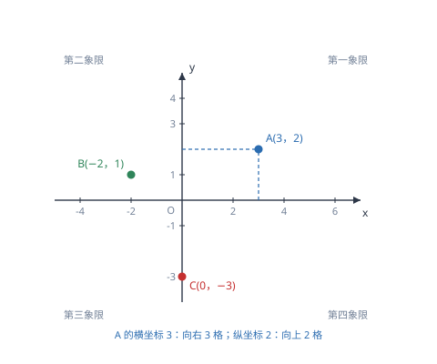

平面直角坐标系与函数
坐标系把「位置」变成一对有序数，函数把「变化」变成一条可看的曲线；这是代数与几何合流的地方。
| 所属主题 | 函数 |
|---|---|
| 所属模块 | 代数 |
| 课标学段 | 第四学段（7~9 年级） |
| 前置知识 | 实数及其运算 |
| 核心素养 | 几何直观抽象能力模型观念 |
教材定位
人民教育出版社《人教版（2024版）义务教育教科书·数学》
七年级下册第9章 平面直角坐标系9.1 用坐标描述平面内点的位置9.2 坐标方法的简单应用
对应七下 9.1 与 9.2。本篇在此基础上把「坐标」与「函数」这两个概念接上——点的坐标变化就是函数。
说明
在平面内画两条互相垂直、原点重合的数轴，水平的叫 x 轴（横轴），竖直的叫 y 轴（纵轴），就组成了平面直角坐标系。平面上任何一点 P 的位置，都可以用它到 y 轴的横向距离（带符号，叫横坐标）和到 x 轴的纵向距离（带符号，叫纵坐标）组成的一对有序数 (x,y) 来表示。两条坐标轴把平面分成四个象限，从右上角开始按逆时针依次叫第一、二、三、四象限，坐标轴上的点不属于任何象限。
在一个变化过程中，有两个变量 x、y，如果对于 x 的每一个确定的值，y 都有唯一确定的值与之对应，就说 y 是 x 的函数，x 叫自变量。函数有三种表示方式：解析式（用式子写规律）、列表（把几组对应值列出来）、图象（把对应值画成点连成线）。三种方式可以互相转换，其中图象最直观——增减、最值、变化快慢都能一眼看出。
使用场景
当题目要求描述位置、平移、对称或计算图形面积时，用坐标来处理。把图形放到坐标系里，长度就变成坐标之差，面积可以用「底乘高的一半」配合坐标计算，几何问题因此获得了代数工具。这也是后续学习一次函数、二次函数图象的基础。
当题目给出一张折线图（如气温随时间变化、水位随天数变化）并要求读取信息时，考的是「读图」能力。读图三步：先看两条轴分别表示什么量与什么单位；再找关键点（起点、最高点、最低点、与轴的交点）；最后看每一段的增减与陡缓，陡表示变化快、平表示几乎不变。
注意点
坐标是一对有序数，(3,2) 与 (2,3) 是两个不同的点，不能颠倒。写坐标时横坐标在前、纵坐标在后，与「先看左右、再看上下」的读图顺序一致。另外，x 轴上的点纵坐标为 0，形如 (a,0)；y 轴上的点横坐标为 0，形如 (0,b)；原点是 (0,0)。
求自变量取值范围时，要检查三类限制：分母不能为零（如 y=1/x-1 中 x≠ 1）；偶次根号下不能为负（如 y=\sqrtx-2 中 x≥ 2）；实际问题要有意义（如人数为正整数、时间非负）。三类限制同时存在时，取它们的公共部分，与前一篇不等式组取交集的做法一致。
证明

图 1：点的位置用一对有序数表示；横坐标在前、纵坐标在后，顺序不能反
证明
结论 1在平面上确定一个点需要两个数：横向偏移多少、纵向偏移多少。
「为什么一个点需要两个数」：在一条数轴上，一个数就能确定位置，因为只有左右一个方向。到了平面上，位置有两个独立方向（左右、上下），一个数不够用，必须给两个数：横向偏移多少、纵向偏移多少。这就是坐标的由来。
关键一步依据是数轴与平面上方向的个数不同：数轴上只有一个方向，一个数即足够；平面上左右、上下两个方向互相独立，缺一个都无法定位，所以必须用一对数来描述位置。
结论 2坐标必须有序，(3,2) 与 (2,3) 表示的是不同的点。
「为什么必须有序」：横坐标与纵坐标的含义不同：横坐标表示左右、纵坐标表示上下。若把 (3,2) 写成 (2,3)，等于把「向右 3、向上 2」改成「向右 2、向上 3」，落到的点完全不同。所以这两个数不是一组可以随便排的数，而是有固定分工的一对数。
关键一步依据是横、纵坐标各有分工：前者管左右、后者管上下。两个方向上的偏移量不能互换位置，所以 (3,2) 与 (2,3) 落到的是两个不同的点——顺序是坐标这种表示方式不可分割的一部分。
结论 3函数要求「给定 x 有唯一确定的 y」，y^2=x 不是函数。
函数定义里「唯一确定」这四个字为什么不能省：以 y^2=x 为例，当 x=4 时，y 可以是 2，也可以是 -2，对应两个值。如果允许「一对多」，那么给定 x 就无法预测 y，图象也会在同一条竖线上出现两个点，函数就失去了「用 x 算 y」的意义。所以函数要求「一个 x 只配一个 y」。
关键一步依据是函数定义中「对于 x 的每一个取值，y 有且只有一个值与之对应」：x=4 时 y 可以取 2 或 -2，已经违反唯一性，所以 y 不是 x 的函数。
结论 4与 y 轴平行的竖直线与图象最多只有一个交点，就是 y 是 x 的函数的可操作判别法。
这个要求在图象上有一个可操作的判别办法：任画一条与 y 轴平行的竖直线，若它与图象最多只有一个交点，就是函数；若有两个或更多交点，就不是函数。圆的方程 x^2+y^2=4 在 x=0 处对应 y=± 2，竖直线上有两个点，所以 y 不是 x 的函数。
关键一步依据是竖直线上各点的横坐标相同：它与图象若有两个交点，就出现同一个 x 对应两个 y 的情形，与唯一性冲突。所以「竖直线最多一个交点」与函数定义互为充要条件，可以拿来直接判定。
动手实验
在坐标纸上描点画 y=x^2：取 x=-3,-2,-1,0,1,2,3，算出 y=9,4,1,0,1,4,9，逐个描点后连成一条关于 y 轴对称的曲线。再用竖直的直尺在图上任意位置竖起来，检查它只与曲线交于一点——这一步验证了「一个 x 对应一个 y」。把 x 与 y 对调画 x=y^2，竖尺会交出两点，可以直观看到「不是函数」的样子。
解题思路
求自变量取值范围按「三查一取」走：查分母是否含未知数，令分母不为零；查是否有偶次根号，令被开方数非负；查是否有实际背景，令结果符合实际（长度为正、人数为整数、时间非负）。三类条件都写成不等式或不等式组，最后取公共部分。答题时写成「由题意得……，所以 x 的取值范围是……」，把依据写出来。
读函数图象按三步走：第一步看轴，明确横轴、纵轴各表示什么量、单位是什么；第二步找特殊点，起点表示初始状态，最高点、最低点表示最大、最小值，与 x 轴的交点表示「量为零」的时刻；第三步看分段，图象上升表示 y 随 x 增大而增大，下降表示减小，水平段表示不变，越陡表示变化越快。
在坐标系里算图形面积，常用「割补法」：把不规则图形补成一个矩形，再减去周围的直角三角形；或者沿坐标轴把它切成几个规则图形分别算。若三角形的边不在坐标轴上，就用「底乘高」找一条水平或竖直的边作底，高就是两点纵坐标或横坐标之差。
按场景的例题
例 1（场景：图形设计） 坐标系中三角形的面积
在平面直角坐标系中，A(1,2)、B(4,2)、C(4,6) 三点构成三角形。求这个三角形的面积。
解：AB 是水平线段，两端纵坐标相同，长度为 4-1=3；BC 是竖直线段，长度为 6-2=4，且 BC\perp AB（一条水平、一条竖直）。所以这是直角三角形，两条直角边为 3 与 4，面积 =1/2× 3× 4=6。也可用割补法核对：把它补成 3× 4 的矩形，面积 12，三角形正好占一半，得 6。
答：面积是 6。
例 2（场景：数据调查） 气温随时间变化的图象读取
某地一天的气温 T（℃）随时间 t（时）变化，记录了四个时刻的数据：0 时 2℃，6 时 -1℃，14 时 8℃，24 时 3℃。这一天的最高气温、最低气温分别是多少？各出现在什么时刻？
解：把四个时刻的温度并排比较：2℃、-1℃、8℃、3℃。最高的是 8℃，出现在 t=14；最低的是 -1℃，出现在 t=6。温差为 8-(-1)=9℃。注意最低气温出现在清晨而非午夜，读数据要以记录为准，不能凭生活经验猜。
答：最高气温 8℃，出现在 14 时；最低气温 -1℃，出现在 6 时；温差 9℃。
例 3（场景：生活优化） 出租车分段计费与里程的关系
某快递首重 1 千克内收费 8 元，超过 1 千克的部分每千克续重 2 元。写快递费 y（元）与重量 x（千克）之间的函数关系式，并求 x=5 时的快递费。
解：分两段写。当 0<x≤ 1 时，只付首重费，y=8。当 x>1 时，费用为首重费加续重费，y=8+2(x-1)=2x+6。所以 y=\begincases8 & (0<x≤ 1)\\ 2x+6 & (x>1)\endcases。当 x=5 时属于第二段，y=2× 5+6=16 元。检验：首重 1 千克 8 元，续重 4 千克 8 元，合计 16 元，一致。
答：y=\begincases8 & (0<x≤ 1)\\ 2x+6 & (x>1)\endcases；x=5 时快递费 16 元。
常用推论
点 P(x,y) 到 x 轴的距离是 |y|，到 y 轴的距离是 |x|，到原点的距离是 \sqrtx^2+y^2。距离一律非负，所以都要加绝对值；这一点在求三角形的高时经常用到。
对称点的坐标规律：关于 x 轴对称，横坐标不变、纵坐标变号，(x,y)\to(x,-y)；关于 y 轴对称，(x,y)\to(-x,y)；关于原点对称，两个坐标都变号，(x,y)\to(-x,-y)。判断依据是「对称轴上的坐标不变，另一坐标变号」。
四个象限内点坐标的符号：第一象限 (+,+)、第二象限 (-,+)、第三象限 (-,-)、第四象限 (+,-)。反过来，已知点的坐标符号就能判断它在哪个象限，这在含参题里常用来确定参数范围。
易错点
错把点 (3,2) 与点 (2,3) 当成同一个点。
为什么错坐标是有序数对，横坐标与纵坐标分工不同。(3,2) 表示向右 3、向上 2；(2,3) 表示向右 2、向上 3，位置完全不同。
正确两个点不同。写坐标时固定「先横后纵」，读坐标时也按这个顺序，养成习惯就不会错。
错认为 x 轴上的点可以写成 (0,b)。
为什么错把两条轴上的特征记反了。x 轴上的点纵向高度为零，所以纵坐标为 0；y 轴上的点横向位置为零，所以横坐标为 0。
正确x 轴上的点是 (a,0)，y 轴上的点是 (0,b)，原点是 (0,0)。
错求 y=\dfrac\sqrtx-1x-2 的自变量取值范围时，只写 x≥ 1。
为什么错只考虑了根号，漏掉了分母。分母 x-2≠ 0 即 x≠ 2，两条限制要同时满足。
正确x≥ 1 且 x≠ 2。写成「1≤ x<2 或 x>2」也可以，但必须把 x=2 排除。
直观理解
坐标系像一张城市地图：横坐标是「东西走了多远」，纵坐标是「南北走了多远」，两个数一给，位置就唯一确定了。而函数像一台自动售货机：投进去一个 x，吐出来唯一一个 y；如果投一个硬币有时吐两瓶、有时吐一瓶，这台机器就不可靠，也就不能叫函数。图象则是把投币与出货的对应关系全部记在一张纸上，让人一眼看出「投得越多，出得越多」还是「投多了反而出得少」。